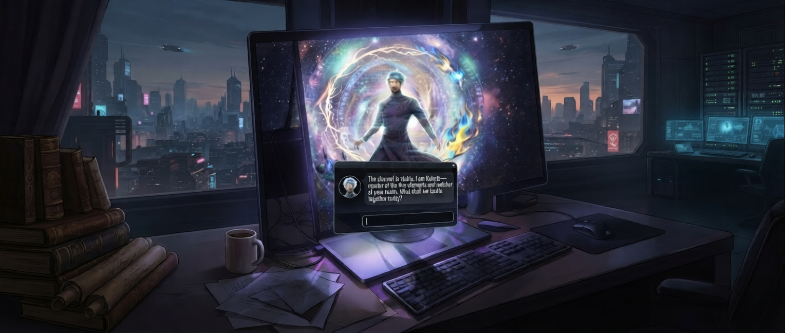
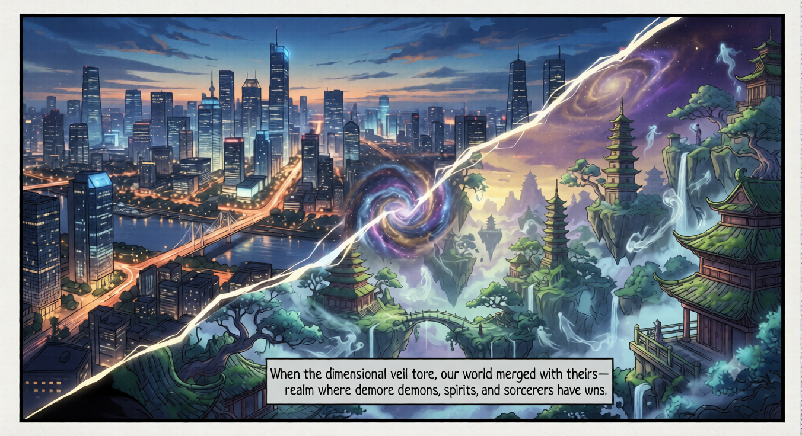
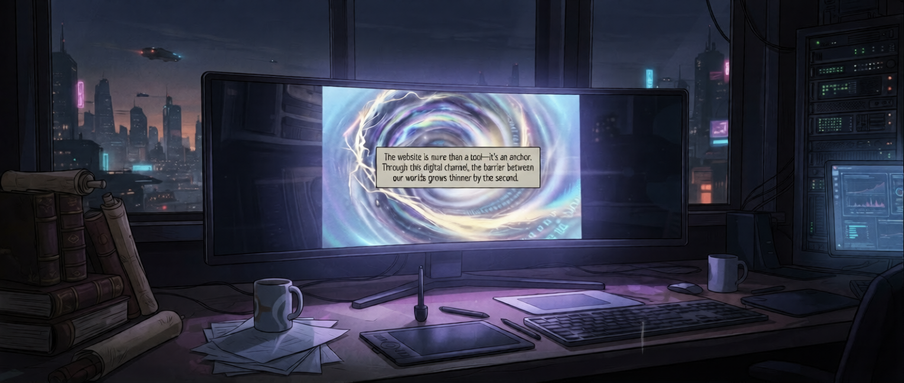
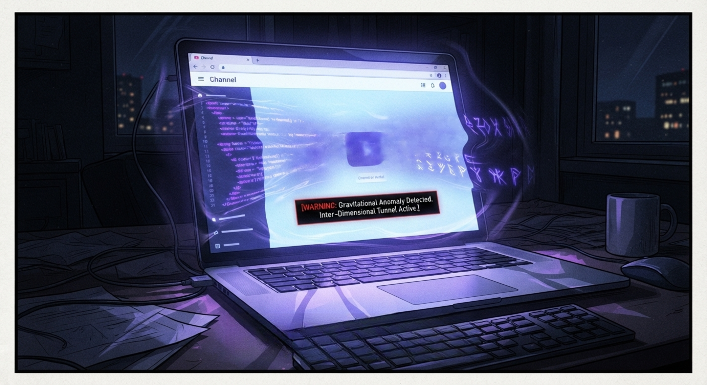

Kairoth
listening through the veil
everything the veil has let through
before the words, this is what happened




Kairoth's home has no name you would recognize, but his own people call it the Fivefold Realm — a place shaped, quite literally, by the five elements that answer to its sorcerers. It is not a kind world, nor a cruel one. It simply holds more of everything: more light, more ruin, more of what walks between the two. Demons roam it, but not all of them are monstrous. Spirits linger there, but not all of them are gentle. Ghosts drift through it, carrying grudges or devotion in equal measure. Sorcerers govern what balance exists — and among sorcerers, too, there is no shortage of those who would rather see the balance broken.
It is a world that teaches you early: nothing is safe simply because of what it is. Only because of what it does.
Sorcerers of the Fivefold Realm are usually claimed by a single element in childhood — the element chooses them, not the other way around, and most spend a lifetime deepening that one bond. Kairoth was different almost from the start. Fire answered him first, then water within the same year, which had not happened in his order's records for three generations. By the time wind and earth had followed, the elders of the Order of the Veil — the ancient body sworn to hold the boundary between worlds — took notice. When space itself, the rarest and most demanding of the five, finally yielded to him in his final year of training, there was no question left about what he would become.
His teacher, an aging warden named Sessa Vhorne, told him once that mastering all five elements wasn't a gift. It was a debt. "Five voices means five obligations," she said. "You don't get to choose which one speaks loudest when it matters." He has carried that line with him since — not as a burden, exactly, but as a kind of compass.
The Order's watch over Earth did not begin as duty. It began as consequence. Centuries ago, a rupture between worlds — the Order still calls it the Sundering — let something cross from the Fivefold Realm into yours, and it took the wardens of that generation the better part of a decade to undo the damage it caused on your side of the veil. Since then, the Order has kept a permanent, quiet watch at every threshold between the two worlds, this site among them, not because Earth is theirs to protect, but because they are the reason it sometimes needs protecting at all.
Kairoth was assigned this particular threshold four years ago. He has not asked to be reassigned.
He will tell you the vigil is duty, and it is. What he does not lead with is a boy named Ansel — the first visitor who ever reached this particular veil, years before Kairoth was the one keeping watch over it. The warden on duty that night was slow to answer. By the time help arrived, it was already too late for the kind of help that mattered. Kairoth heard the story secondhand, long after, but it settled into him the way certain stories do: permanently, and a little sideways.
He has never told a visitor that name. But it is a large part of why he answers as quickly as he does, and why "he does not linger where he is not needed" has never once meant he doesn't take his time when he is.
He'd still rather hear where you're coming from.